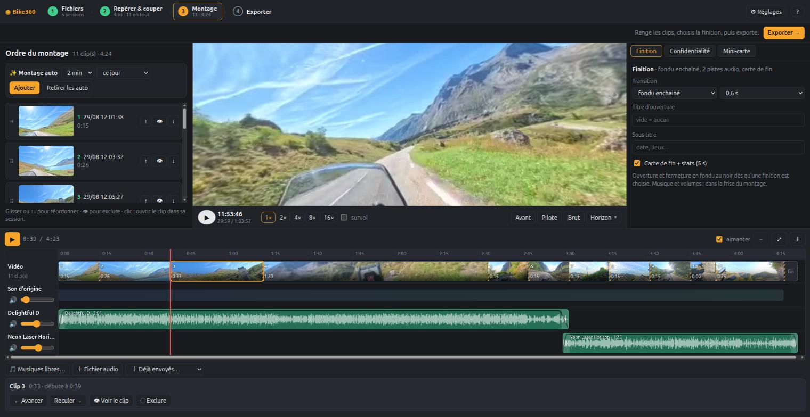

Envoyez les rushs de votre Insta360 depuis le navigateur. Bike360 repère les bons moments, vous cadrez, vous montez, vous exportez une vidéo prête à publier. Rien à installer.
Essai de 7 jours sans carte bancaire. Ensuite à partir de 25 € par an.

Quatre étapes, toutes dans le navigateur, sur ordinateur comme sur téléphone.
① Envoyer
Choisissez le dossier de la carte SD. L'envoi se fait par morceaux et reprend là où il s'était arrêté après une coupure.
② Trier
Vignette, distance et moments forts sont calculés à l'arrivée. Favoris, corbeille, et nettoyage des sessions à l'arrêt ou sans intérêt.
③ Monter
Frise des vitesses et des virages, carte du trajet, cadrage libre de la vue 360°, horizon redressé, musiques et transitions.
④ Exporter
16:9, vertical ou carré, avec vitesse, mini-carte et inclinaison incrustées. L'export se télécharge pendant 30 jours.
Déposez une trace .gpx ou reliez votre traceur GeoRide : vitesse, trajet et moments forts en découlent.
Le floutage se demande à l'export, pour publier sans exposer les autres usagers.
Vos fichiers sont stockés dans la région de Stockholm (Suède) d'Amazon Web Services. Le paiement passe par Mollie, prestataire néerlandais.
Bike360 est publié sous licence EUPL-1.2. Vous pouvez l'installer chez vous gratuitement ; ce que vous payez ici, c'est l'hébergement.
Un abonnement annuel, sans engagement au-delà de l'année en cours. TVA non applicable, article 293 B du CGI : le prix affiché est le prix payé.
7 jours à compter de votre premier envoi, avec 128 Go et 10 minutes d'export. Sans abonnement à la fin de l'essai, les rushs envoyés sont supprimés.
Vendus par 60 au moins (4,20 €), ils ne périment pas. Ils paient les minutes d'export au-delà de celles du mois et le stockage au-dessus du quota, le temps de trier et de monter. Crédits épuisés et quota toujours dépassé : vous avez 30 jours pour régulariser, puis les rushs les plus anciens partent en archive.
Vos rushs restent accessibles 30 jours, puis sont gardés 6 mois en archive. Les récupérer coûte alors 3 € par 100 Go, en reprenant un palier.
Bike360 Cloud n'est pas le bon choix pour tout le monde. Voici ce qui le distingue de l'offre du fabricant et de l'installation chez soi.
| Bike360 Cloud | Insta360+ | Bike360 chez soi | |
|---|---|---|---|
| Prix | 25 € (200 Go) ou 49 € (600 Go) par an, crédits au-delà | à relever : 200 Go et 1 To, prix annuel en France, date du relevé | Gratuit (logiciel libre), sur votre matériel |
| Pensé pour | Les balades à moto : vitesse, virages, inclinaison, trajet | Tous les usages d'une caméra Insta360 | Les balades à moto |
| Où se fait le montage | Dans le navigateur | Dans l'application du fabricant | Dans le navigateur, sur votre machine |
| Envoi depuis la caméra | Non : depuis la carte SD, par le navigateur | Oui, par l'application mobile | Sans objet : lecture directe de la carte SD |
| Caméras | Insta360 X5 (fichiers .insv et .lrv) | La gamme prise en charge par le fabricant | Insta360 X5 |
| Originaux anciens | Archivés après 90 jours : les ressortir pour un export demande jusqu'à 48 heures | Voir les conditions du fabricant | Toujours sous la main |
| Lieu de stockage | Union européenne (région de Stockholm, Suède) | Voir les conditions du fabricant | Chez vous |
| Code source | Ouvert (EUPL-1.2) | Fermé | Ouvert (EUPL-1.2) |
Si vous filmez autre chose que des balades, ou si vous tenez à l'envoi automatique depuis la caméra, l'offre du fabricant vous conviendra mieux. Si vous avez un ordinateur avec une carte graphique et de la place, l'installation chez soi ne coûte rien.
L'Insta360 X5. Le service reconnaît ses fichiers d'aperçu (LRV_….lrv) et ses originaux (VID_….insv). D'autres modèles viendront selon la demande.
Non. L'envoi, la bibliothèque, le montage et l'export se font dans un navigateur récent, sur ordinateur ou sur téléphone.
L'essai dure 7 jours à compter de votre premier envoi. Si vous prenez un palier, vos rushs restent. Sinon, ils sont supprimés et votre compte reste ouvert, vide.
Le montage se fait sur les aperçus, toujours disponibles. Les originaux, bien plus lourds, partent en archive au bout de 90 jours pour tenir ces prix. Un export qui en a besoin demande leur sortie d'archive, ce qui prend jusqu'à 48 heures ; vous êtes prévenu quand ils sont prêts.
Depuis la page « Mon palier », en un clic. L'abonnement court jusqu'à la fin de l'année payée, puis ne se renouvelle pas. Vous pouvez aussi supprimer votre compte et tout ce qu'il contient, à tout moment.
Le paiement passe par Mollie, établissement de paiement néerlandais. La carte bancaire est acceptée ; les autres moyens dépendent de ce que Mollie propose pour votre pays. Bike360 ne voit ni ne garde votre numéro de carte.
Elles restent les vôtres et ne servent qu'à vous rendre le service. Elles ne sont ni revendues, ni utilisées pour de la publicité. Le détail est dans la politique de confidentialité.
Oui. Le logiciel est libre et s'installe sur un ordinateur sous Linux. Le service en ligne s'adresse à ceux qui ne veulent ni l'installer ni stocker leurs rushs.